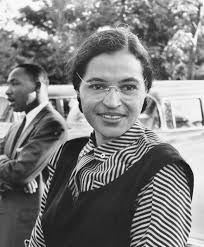

Many people know the story of Rosa Parks. She was a woman who in 1995 who refused to give up her seat on a bus for a man who was white. During this time African Americans were expected to yield to white individuals. However this simple act that resulted in her arrest greatly contributed to the civil rights movement. By choosing to not give up her seat, Rosa Parks set out a message that she would not settle for acts that were unjust. By not giving up her seat, Rosa Parks caused the Montgomery Bus Boycott to leap into action which eventually led to the desegregation of public facilities.
Rosa Parks is my hero because she stood up for what she believed in. Parks seemed to realize that silence breeds violence and hate and therefore, she understood the importance of resisting discriminatory practices. If Rosa had simply given up her seat for the white individual, segregation in buses and other public amenities was likely to persist, but by using her voice, Rosa worked towards reforming a society in dire need of change. I truly believe that everyone can learn from what Rosa Parks did. It is so incredibly important to meet challenges and wrongdoings head on instead of simply accepting them or avoiding them. Speaking up brings change. Rosa Parks was an incredible woman that I greatly look up to.
Click here to read more about Rosa Parks.